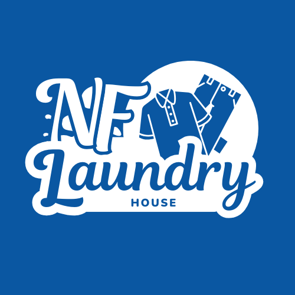

Connect to the shop computer
A hosted address like nf-laundry.onrender.com works from anywhere, including mobile data. A shop-computer address like 192.168.1.45:4000 works only on the same Wi-Fi.
nf-laundry.onrender.com
192.168.1.45:4000